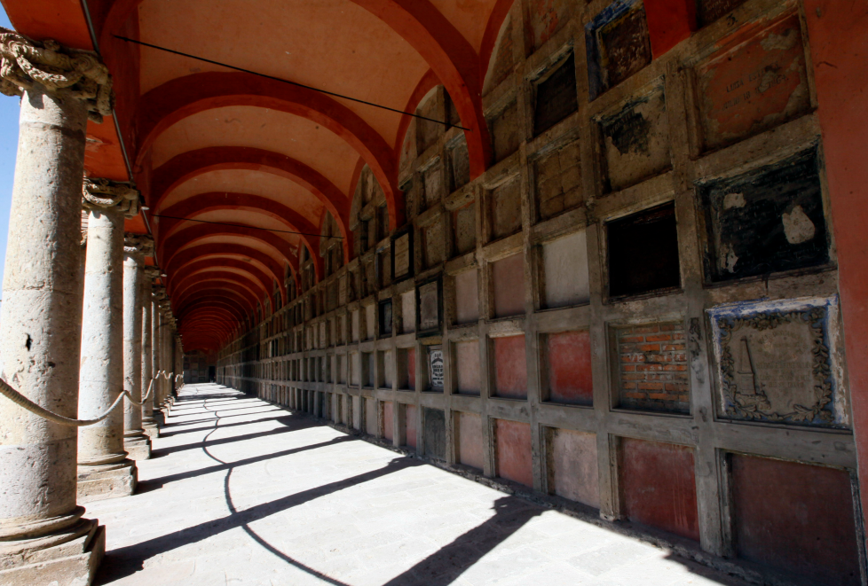
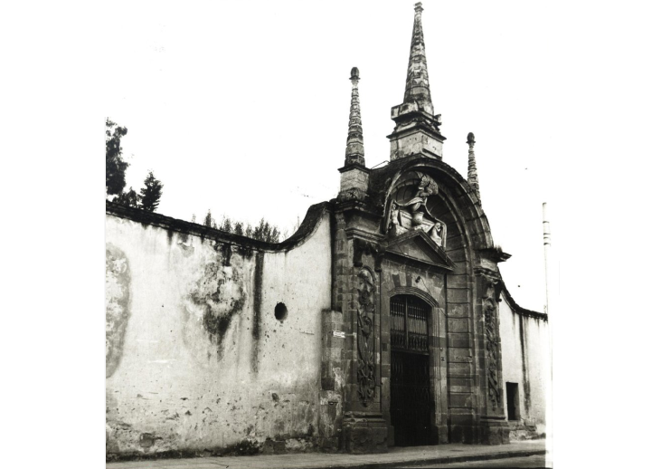
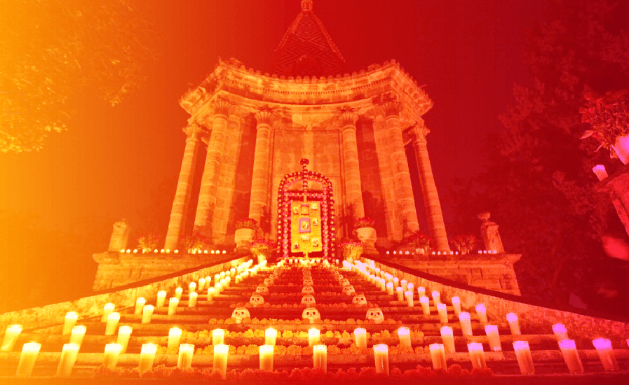

Acompananos en un recorrido por todo el historico lugar.
  El Panteon de Belen, originalmente conocido como Panteon de Santa Paula, fue construido en 1848 por el arquitecto Manuel Gomez Ibarra, a solicitud del obispo Diego de Aranda y Carpinteiro. El cementerio fue diseniado en estilo neoclasico y esta dividido en dos patios: el patio de Santa Paula y el patio de San Francisco. El patio de Santa Paula es el patio mas antiguo del Panteon de Belén. En este patio se encuentran las tumbas de algunas de las personas más importantes de la historia de Guadalajara, incluyendo al obispo Diego de Aranda y Carpinteiro, el general Pedro Moreno y el musico Jose Clemente Orozco. El patio de San Francisco es el patio más grande del Panteón de Belén. En este patio se encuentran las tumbas de personas de todas las clases sociales, incluyendo políticos, artistas, músicos, escritores y personajes históricos. Entre otros datos de su historia, se sabe que durante la Revolución Mexicana fue utilizado como refugio para los soldados revolucionarios.
Ademas del recorrido habra eventos especiales donde podras participar:
Estamos ubicados en:
C. Belén 684, El Retiro, 44100 Guadalajara, Jal.